File: 000982.gt.txt (if the image is defective, simply delete all Arabic text and the line will be excluded)

قلت: وما ذاك إلا لضعف أمر الخلافة.
File: 000983.gt.txt (if the image is defective, simply delete all Arabic text and the line will be excluded)

وفيها توثب على دمشق قسام كما هو مذكور في ترجمته في سنة ست
File: 000984.gt.txt (if the image is defective, simply delete all Arabic text and the line will be excluded)
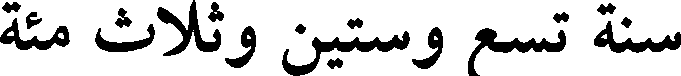
سنة تسع وستين وثلاث مئة
File: 000985.gt.txt (if the image is defective, simply delete all Arabic text and the line will be excluded)

وسبعين.
File: 000986.gt.txt (if the image is defective, simply delete all Arabic text and the line will be excluded)

في صفر قبض عضد الدولة على قاضي القضاة أبي محمد بن
File: 000987.gt.txt (if the image is defective, simply delete all Arabic text and the line will be excluded)

معروف، فأنفذه إلى القلعة بفارس، وقلد أبا سعد بشر بن الحسين القضاء.
File: 000988.gt.txt (if the image is defective, simply delete all Arabic text and the line will be excluded)

وفي شعبان ورد رسول العزيز صاحب مصر إلى عضد الدولة بكتاب،
File: 000989.gt.txt (if the image is defective, simply delete all Arabic text and the line will be excluded)
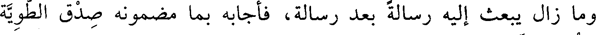
وما زال يبعث إليه رسالة بعد رسالة، فأجابه بما مضمونه صدق الطوية
File: 000990.gt.txt (if the image is defective, simply delete all Arabic text and the line will be excluded)
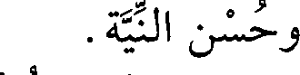
وحسن النية.
File: 000991.gt.txt (if the image is defective, simply delete all Arabic text and the line will be excluded)

وسأل عضد الدولة الطائع أن يزيد في لقبه «تاج الملة» ويجدد الخلع
File: 000992.gt.txt (if the image is defective, simply delete all Arabic text and the line will be excluded)

عليه ويلبسه التاج، فأجابه، وجلس الطائع على السرير وحوله مئة بالسيوف
File: 000993.gt.txt (if the image is defective, simply delete all Arabic text and the line will be excluded)

والزينة، وبين يديه مصحف عثمان، وعلى كتفه البردة، وبيده القضيب،
File: 000994.gt.txt (if the image is defective, simply delete all Arabic text and the line will be excluded)
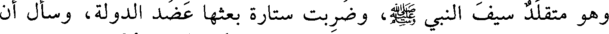
وهو متقلد سيف النبي صعلم، وضربت ستارة بعثها عضد الدولة، وسأل أن
File: 000995.gt.txt (if the image is defective, simply delete all Arabic text and the line will be excluded)

تكون حجابا للطائع، حتى لا تقع عليه عين أحد من الجند قبله، ودخل
File: 000996.gt.txt (if the image is defective, simply delete all Arabic text and the line will be excluded)

الأتراك والديلم، وليس مع أحد منهم حديد، ووقف الأشراف وأصحاب
File: 000997.gt.txt (if the image is defective, simply delete all Arabic text and the line will be excluded)
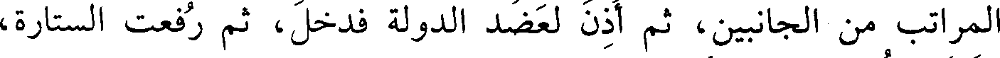
المراتب من الجانبين، ثم أذن لعضد الدولة فدخل، ثم رفعت الستارة،
File: 000998.gt.txt (if the image is defective, simply delete all Arabic text and the line will be excluded)

وقبل عضد الدولة الأرض، فارتاع زياد القائد لذلك، وقال بالفارسية: ما
File: 000999.gt.txt (if the image is defective, simply delete all Arabic text and the line will be excluded)

190
File: 001000.gt.txt (if the image is defective, simply delete all Arabic text and the line will be excluded)

78 - علي بن عبدالله بن الفضل البغدادي، أبوالحسين.
File: 001001.gt.txt (if the image is defective, simply delete all Arabic text and the line will be excluded)

حدث بمصر عن جعفر الفريابي، وأبي خليفة. وعنه الدارقطني،
File: 001002.gt.txt (if the image is defective, simply delete all Arabic text and the line will be excluded)

وعبدالغني الأزدي(1) .
File: 001003.gt.txt (if the image is defective, simply delete all Arabic text and the line will be excluded)

79 - عيسى بن موسى بن أبي محمد ابن المتوكل على الله، أبو
File: 001004.gt.txt (if the image is defective, simply delete all Arabic text and the line will be excluded)

الفضل الهاشمي العباسي.
File: 001005.gt.txt (if the image is defective, simply delete all Arabic text and the line will be excluded)

سمع محمد بن خلف بن المرزبان، وأبا بكر بن أبي داود، وجماعة.
File: 001006.gt.txt (if the image is defective, simply delete all Arabic text and the line will be excluded)

وعنه أبو علي بن شاذان.
File: 001007.gt.txt (if the image is defective, simply delete all Arabic text and the line will be excluded)

قال الخطيب(2) : كان ثقة ثبتا. حدثني الأزهري أن أبا الفضل لازم
File: 001008.gt.txt (if the image is defective, simply delete all Arabic text and the line will be excluded)

ابن أبي داود في سماع الحديث نيفا وعشرين سنة، وولد سنة ثمانين
File: 001009.gt.txt (if the image is defective, simply delete all Arabic text and the line will be excluded)

ومئتين، وأول سماعه من أبي بكر سنة تسعين.
File: 001010.gt.txt (if the image is defective, simply delete all Arabic text and the line will be excluded)

80 - غالب بن عبدالله بن موسى بن فليح، أبو بكر البزاز.
File: 001011.gt.txt (if the image is defective, simply delete all Arabic text and the line will be excluded)

مصري، توفي في جمادى الأولى.
File: 001012.gt.txt (if the image is defective, simply delete all Arabic text and the line will be excluded)

81 - محمد بن أحمد بن سهل بن نصر، أبو بكر الرملي الشهيد
File: 001013.gt.txt (if the image is defective, simply delete all Arabic text and the line will be excluded)

المعروف بابن النابلسي.
File: 001014.gt.txt (if the image is defective, simply delete all Arabic text and the line will be excluded)

حدث عن سعيد بن هاشم الطبراني، ومحمد بن الحسن بن قتيبة،
File: 001015.gt.txt (if the image is defective, simply delete all Arabic text and the line will be excluded)

ومحمد بن أحمد بن شيبان الرملي. وعنه تمام الرازي، والدارقطني،
File: 001016.gt.txt (if the image is defective, simply delete all Arabic text and the line will be excluded)

وعبدالوهاب الميداني، وعلي بن عمر الحلبي، وغيرهم.
File: 001017.gt.txt (if the image is defective, simply delete all Arabic text and the line will be excluded)

قال أبو ذر الهروي : سجنه بنو عبيد وصلبوه على السنة. سمعت
File: 001018.gt.txt (if the image is defective, simply delete all Arabic text and the line will be excluded)
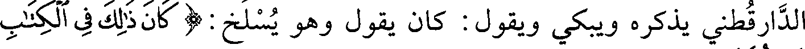
الدارقطني يذكره ويبكي ويقول : كان يقول وهو يسلخ: ( كان ذلك في الكتاب
File: 001019.gt.txt (if the image is defective, simply delete all Arabic text and the line will be excluded)

مسطورا ) [الإسراء : 58] .
File: 001020.gt.txt (if the image is defective, simply delete all Arabic text and the line will be excluded)

وقال أبو الفرج ابن الجوزي(3) : أقام جوهر لأبي تميم صاحب مصر
File: 001021.gt.txt (if the image is defective, simply delete all Arabic text and the line will be excluded)

الزاهد أبا بكر النابلسي، وكان ينزل الأكواخ من الشام، فقال له: بلغنا أنك
File: 001022.gt.txt (if the image is defective, simply delete all Arabic text and the line will be excluded)
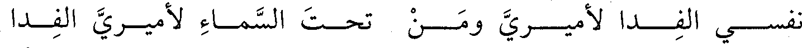
نفسـي الفـدا لأميـري ومـن تحـت السمـاء لأميـري الفـدا
File: 001023.gt.txt (if the image is defective, simply delete all Arabic text and the line will be excluded)

قال الحاكم: سمعت محمد بن الحسين الوضاحي يقول: سمعت أبا
File: 001024.gt.txt (if the image is defective, simply delete all Arabic text and the line will be excluded)

العباس يذكر صلة أبيه لابن دريد لما عمل هذه القصيدة، قال الوضاحي :
File: 001025.gt.txt (if the image is defective, simply delete all Arabic text and the line will be excluded)

فقلت : ما وصل إليه من خاصتك؟ قال: لم تصل يدي إذ ذاك إلا إلى ثلاث
File: 001026.gt.txt (if the image is defective, simply delete all Arabic text and the line will be excluded)
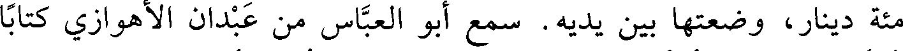
مئة دينار، وضعتها بين يديه. سمع أبو العباس من عبدان الأهوازي كتابا
File: 001027.gt.txt (if the image is defective, simply delete all Arabic text and the line will be excluded)
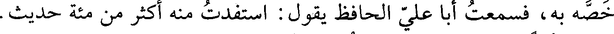
خصه به، فسمعت أبا علي الحافظ يقول: استفدت منه أكثر من مائة حديث.
File: 001028.gt.txt (if the image is defective, simply delete all Arabic text and the line will be excluded)
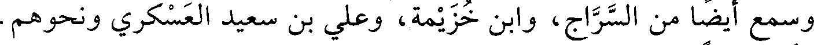
وسمع أيضا من السراج، وابن خزيمة، وعلي بن سعيد العسكري ونحوهم.
File: 001029.gt.txt (if the image is defective, simply delete all Arabic text and the line will be excluded)
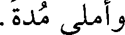
وأملى مدة.
File: 001030.gt.txt (if the image is defective, simply delete all Arabic text and the line will be excluded)
روى عنه أبو علي الحافظ، وهو أسند منه، وأبو الحسين الحجاجي،
File: 001031.gt.txt (if the image is defective, simply delete all Arabic text and the line will be excluded)

وأبو عبدالله الحاكم وجماعة. وقد عرضت عليه ولايات جليلة فامتنع.